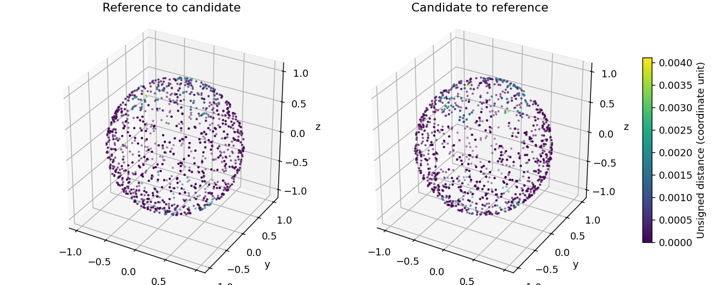

成员2实验工作台 · 所有距离均为有限采样估计。
执行：completed 判定：not_applicable 质量：unverified
输入版本：bfaa8db245ef4c9ba2efa5e683ca8cad。未提供成员1完整复检时，不认定优化正式合格；体积未获闭合、方向、自交及实体归属验证时记为不可用。未执行步骤保留为未执行。
| asd | d95 | sampled_max | area_change | volume_change | volume_status |
|---|---|---|---|---|---|
| 0.00022075332945783622 | 0.0016253227185483148 | 0.004112280045699233 | 0.00010339349222714746 | 不可用 | unavailable |

{
"operation": "evaluate",
"run_id": "evaluate_65251511f0",
"input_version": "bfaa8db245ef4c9ba2efa5e683ca8cad",
"status": "completed",
"quality_status": "unverified",
"decision": "not_applicable",
"metrics": {
"status": "completed",
"reference_version": "bfaa8db245ef4c9ba2efa5e683ca8cad",
"candidate_version": "107a532efa034929b80a021f90f266ae",
"reference_hash": "73ed5cb89716a969ca4f0377f09923efa5856e9d58df125ab61d0d89bee7ab9a",
"candidate_hash": "ac85aeccfaec1b73d9a157af10f5b69917049af469eebaf813cb2b615e9bf5aa",
"backend": "VTK.StaticCellLocator.point_to_triangle",
"distance_definition": "unsigned; D95=max(directional Q95); sampled maximum is not exact Hausdorff",
"asd": 0.00022075332945783622,
"d95": 0.0016253227185483148,
"sampled_max": 0.004112280045699233,
"reference_scale": 3.4641016151377544,
"asd_normalized": 6.372599709349394e-05,
"d95_normalized": 0.000469190254536942,
"sampled_max_normalized": 0.0011871129956837895,
"unit_status": "confirmed",
"coordinate_unit": "mm",
"unit_to_mm": 1,
"samples_each_direction": 1000,
"seed_ab": 20261018,
"seed_ba": 20261019,
"reference_quality": {
"faces": 768,
"vertices": 386,
"area": 12.464405350252882,
"q_min": 0.5157324958649108,
"q_p5": 0.7381871502904407,
"q_median": 0.8616839955475463,
"low_quality_fraction": 0.0,
"zero_area_faces": 0
},
"candidate_quality": {
"faces": 960,
"vertices": 482,
"area": 12.46569408865058,
"q_min": 0.3184680966025451,
"q_p5": 0.3184680966025471,
"q_median": 0.8316816939419138,
"low_quality_fraction": 0.0,
"zero_area_faces": 0
},
"reduction_ratio": -0.25,
"area_change": 0.00010339349222714746,
"volume_change": null,
"volume_status": "unavailable",
"volume_reason": "signed solid ownership and multi-shell volume evaluation are not implemented",
"distances_mm": {
"asd": 0.00022075332945783622,
"d95": 0.0016253227185483148,
"sampled_max": 0.004112280045699233
}
},
"elapsed_seconds": 0.41610450000007404,
"environment": {
"python": "3.11.9 (tags/v3.11.9:de54cf5, Apr 2 2024, 10:12:12) [MSC v.1938 64 bit (AMD64)]",
"executable": "D:\\作业\\Medical_3D_model\\.venv\\Scripts\\python.exe",
"platform": "Windows-10-10.0.26200-SP0",
"packages": {
"numpy": "2.4.4",
"scipy": "1.17.1",
"trimesh": "5.1.1",
"pymeshlab": "2025.7.post1",
"vtk": "9.7.1",
"pyvista": "0.49.1",
"pyvistaqt": "0.13.1",
"PySide6-Essentials": "6.12.0",
"pytest": "9.0.3"
},
"freecad": {
"status": "configured",
"executable": "D:\\作业\\Medical_3D_model\\tools\\freecad\\runtime\\FreeCAD_1.1.4-Windows-x86_64-py311\\bin\\freecadcmd.exe",
"arguments": [
"{script}"
],
"config_path": "D:\\作业\\Medical_3D_model\\configs\\freecad.local.json"
}
},
"output_dir": "D:\\作业\\Medical_3D_model\\results\\workflow_ui_verification\\runs\\evaluate_65251511f0"
}